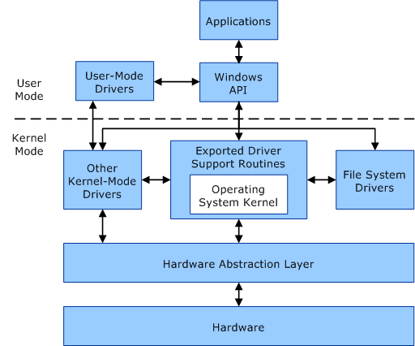
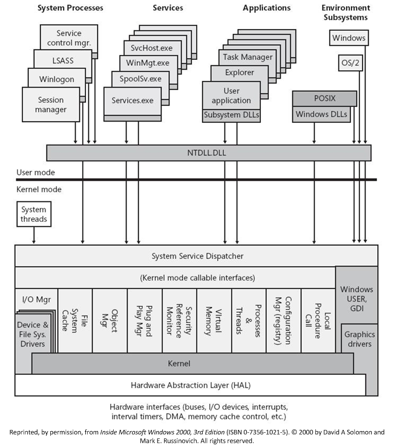
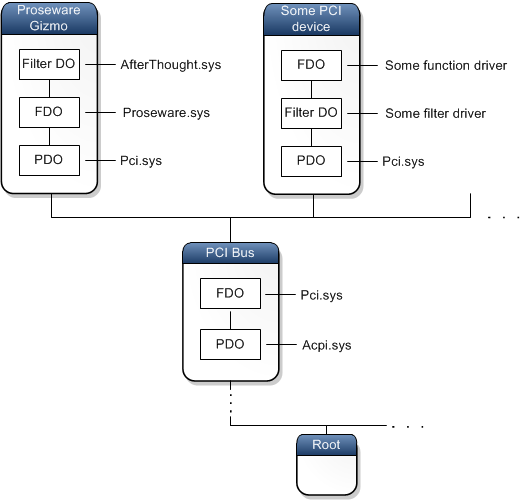
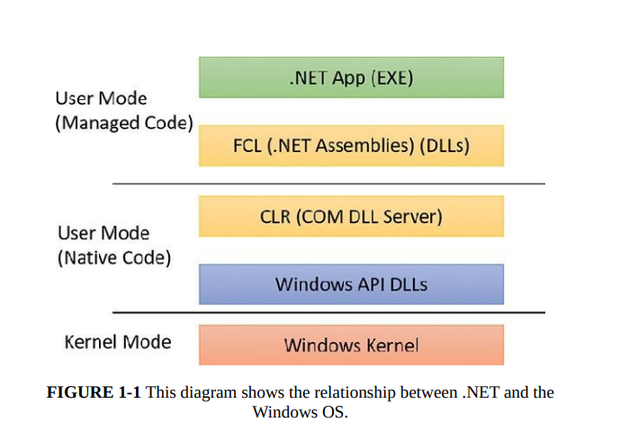
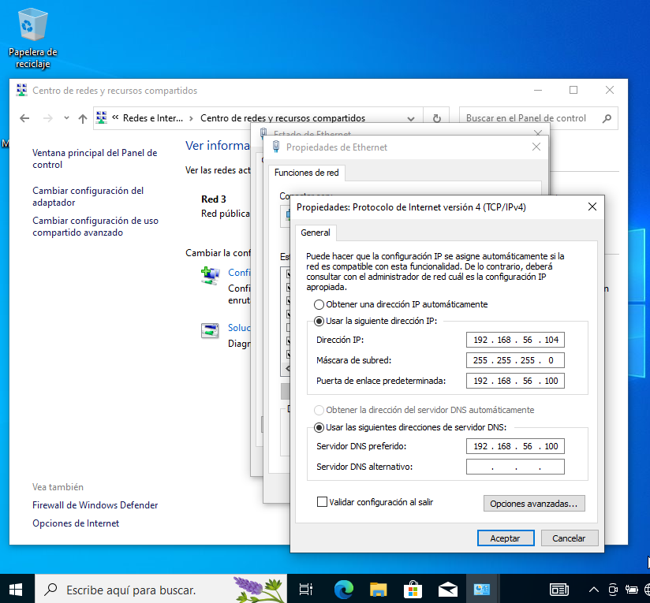

Laboratorio de Exploit Development: Arquitectura del Kernel, Binarios y ROP en la Práctica
Bitácora técnica de un mes de laboratorio intensivo. Desde el estudio de Windows Internals, drivers KMDF/UMDF y formatos PE/ELF/DEX hasta la construcción de cadenas ROP, shellcode injection y bypass de mitigaciones. Incluye análisis de CVEs reales en Chrome V8 y WebRTC, laboratorio práctico con VirtualBox + fakedns + INetSim, y un plan de retoma con tareas pendientes.
/índice_de_la_bitácora +
- Contexto y Motivación
- Windows Internals: Modos, Memoria y Componentes del Kernel
- Drivers en Windows: Tipos, Pilas y Modelos KMDF/UMDF
- Formatos de Binarios: PE, ELF, DEX/APK
- Assembly y Arquitecturas: x86, AMD64, ARM64
- Shellcode Injection y Técnicas de Evasión
- Corrupción de Memoria y Mitigaciones
- ROP, JOP y Técnicas Avanzadas
- Casos Reales: CVEs en Chrome V8 y WebRTC
- Diario de Laboratorio: Intentos Reales y Metodología
- Laboratorio Práctico: VirtualBox + INetSim + fakedns
- Conclusión, Estado del Laboratorio y Plan de Retoma
Este documento no es un tutorial lineal. Es una bitácora de laboratorio que recopila notas, diagramas, configuraciones y pruebas ejecutadas durante septiembre de 2024, complementadas con análisis de vulnerabilidades reales y fragmentos de mi proceso de aprendizaje. Refleja el camino de un investigador en formación: temas que se ramifican, conceptos que se retoman desde distintos ángulos, intentos fallidos que obligan a repasar fundamentos, y un laboratorio que crece orgánicamente.
00. Contexto y Motivación
Como investigador de seguridad ofensiva, las capacidades de identificar una vulnerabilidad y desarrollar un exploit funcional son cruciales para diversos propósitos: participación en programas de Bug Bounty, construcción de kits de exploits como PoC dentro de la empresa, y la comprensión profunda de las tácticas de adversarios reales. Este laboratorio nace de la necesidad de sistematizar ese conocimiento.
La ruta que tracé tiene tres fases: fundamentos (buffer overflow, ROP, tipos de corrupción de memoria), profundización (format strings, exploits de estructura de archivos, abuso de allocators dinámicos, concepto de máquinas extrañas) y práctica (desafíos como Guyinatuxedo's Nightmare, CTFs aplicados a escenarios reales y simulaciones de adversarios). Esta bitácora documenta principalmente la primera fase, con incursiones en la segunda.
El desarrollo de exploits comparte mucho del mindset del análisis de malware que ya practico en el triage automatizado de PE con Capstone y en la evasión estática de Mirai en ASM. La diferencia es que aquí no solo leo el código: lo manipulo para que haga lo que yo quiero. En esencia, es el arte de manipular el flujo de ejecución de un programa para que realice acciones no intencionadas por su desarrollador.
01. Windows Internals: Modos, Memoria y Componentes del Kernel
La explotación binaria en Windows exige comprender su arquitectura interna. No basta con conocer el lenguaje ensamblador: hay que entender dónde se ejecuta el código, cómo se gestiona la memoria y qué componentes del sistema operativo intervienen en cada operación.
1.1 Modo Usuario vs Modo Kernel
Windows divide la ejecución en dos modos de acceso al procesador. El modo usuario es donde se ejecutan las aplicaciones: cada proceso tiene su propio espacio de direcciones virtuales privado. El modo kernel comparte un único espacio de direcciones virtuales. Todo el código que se ejecuta aquí —controladores, el núcleo del sistema operativo, la HAL— tiene acceso completo a la memoria del sistema y a todas las instrucciones de la CPU. Un error en modo kernel puede tumbar todo el sistema. El modelo de seguridad de Windows está basado en anillos de protección: los exploits de kernel buscan elevar privilegios de Ring 3 a Ring 0.

1.2 Memoria Virtual y Espacios de Direcciones
Los procesadores utilizan direcciones virtuales que se traducen a direcciones físicas mediante tablas de páginas. Un proceso de 32 bits tiene un espacio de ~2 GB; uno de 64 bits tiene ~128 TB. Esto tiene implicaciones directas en la efectividad del ASLR. Los drivers en modo kernel deben tener cuidado al leer o escribir en direcciones del espacio de usuario, porque la dirección proporcionada pertenece al espacio virtual del proceso que inició la solicitud, que probablemente no sea el proceso actual al momento de completarse la operación.

1.3 Componentes del Kernel
| Componente | Función | Relevancia para Explotación |
|---|---|---|
| Administrador de Objetos | Archivos, dispositivos, sincronización, registro | Manipulación de objetos del kernel para escalada |
| Administrador de Memoria | Memoria física del sistema | Fundamental para ASLR, DEP, page tables |
| Administrador de E/S | Comunicación apps y controladores | IRPs, pilas de dispositivos, IOCTLs |
| Monitor de Referencia de Seguridad | Rutinas para control de acceso | Bypass de controles de acceso |
| HAL | Capa de abstracción de hardware | Acceso directo al hardware en exploits avanzados |

Este diagrama es mi referencia constante. Cada vez que analizo un driver vulnerable o construyo una cadena ROP, vuelvo aquí para ubicar en qué capa estoy operando. La explotación de kernel no se improvisa: requiere un mapa mental preciso de esta arquitectura.
02. Drivers en Windows: Tipos, Pilas y Modelos KMDF/UMDF
Los controladores son una superficie de ataque privilegiada. Un driver vulnerable en modo kernel es una puerta directa a Ring 0. En el laboratorio, dediqué varias sesiones a entender cómo se estructuran y cómo procesan solicitudes.
2.1 Tipos de Drivers y Pilas
Existen Filter Drivers (lógica adicional), Function Drivers (comunicación directa con el dispositivo) y Software Drivers (solo acceden a estructuras del kernel). Todos se organizan en pilas. Un concepto fundamental es que los controladores son una colección de callbacks: una vez inicializadas, esperan a que el sistema las invoque cuando ocurre un evento.
En Windows, los dispositivos se representan mediante nodos en el árbol PnP. Cada nodo tiene una pila de dispositivos: una lista ordenada de objetos de dispositivo, cada uno asociado a un controlador. El controlador del bus crea un Physical Device Object (PDO), luego se añaden el Function Driver (FDO) y opcionalmente Filter Drivers (Filter DO).



2.2 Implementación Práctica: Driver KMDF Mínimo
Para entender la estructura de un driver, implementé un driver Hello World KMDF. El punto de entrada es DriverEntry, que inicializa las estructuras del controlador. El sistema invoca EvtDeviceAdd cuando detecta el dispositivo:
Un driver vulnerable que expone IOCTLs sin validación permite que un atacante en modo usuario envíe solicitudes maliciosas al kernel. El caso de DEVCORE con Kernel Streaming —que analizo más adelante— demuestra que estos bugs pueden existir por décadas. Este patrón es el mismo que encontré en la auditoría de la API financiera: confiar en el origen sin verificar permisos.
03. Formatos de Binarios: PE, ELF, DEX/APK
El exploit development requiere comprender la estructura de los archivos que vamos a atacar. Cada sistema operativo tiene su formato: PE en Windows, ELF en Linux, y DEX dentro de APK en Android.
3.1 PE (Portable Executable) — Windows
El formato PE organiza el ejecutable en encabezados y secciones. El encabezado DOS redirige al punto de entrada. El encabezado NT contiene el entry point real, número de secciones, tamaño de la imagen. La tabla de secciones describe .text (código), .data (datos inicializados), .rdata (solo lectura), .reloc (reubicaciones). Para el exploit development, .reloc es crucial cuando ASLR está activo. La misma metodología de análisis que aplico en el triage de PE con Capstone es el punto de partida.
3.2 ELF (Executable and Linkable Format) — Linux
ELF comparte similitudes con PE pero con mayor flexibilidad. Las secciones clave son .text, .plt (fundamental para ROP), .got (objetivo clásico de sobrescritura), y .dynamic. ELF tiene segmentos además de secciones: el segmento de texto contiene el código, el de datos contiene los datos. Esta distinción es vital para exploits que manipulan el layout de memoria.
3.3 DEX/APK — Android
El APK es un empaquetamiento ZIP que contiene el archivo DEX, el manifiesto, recursos y bibliotecas nativas. El bytecode DEX se ejecuta en la máquina virtual Android (Dalvik/ART). Para el análisis de vulnerabilidades, generalmente trabajamos a nivel de VM. La misma metodología de reversing que usé en el análisis de la VM MC7 de Siemens aplica aquí: entender la máquina virtual, su formato de bytecode y cómo traduce instrucciones. Herramientas como JADX, Apktool, Frida y MobSF cubren el análisis estático y dinámico del ecosistema.
04. Assembly y Arquitecturas: x86, AMD64, ARM64
El Assembly es el lenguaje que usan directamente los procesadores. A diferencia de los programadores, los desarrolladores de exploits trabajamos con código máquina en bruto. Es importante entender lo que la CPU está viendo: registros, convenciones de llamada, segmentación de memoria, y traducción de tipos de alto nivel a bytes sin procesar.
4.1 x86 vs AMD64
- Registros: x86: 32 bits (EAX, EBX, ECX, EDX, ESI, EDI, ESP, EBP). AMD64: 64 bits (RAX, RBX, RCX, RDX, RSI, RDI, RSP, RBP) + R8-R15.
- Convención de llamada: x86: argumentos por pila. AMD64 Windows: RCX, RDX, R8, R9. AMD64 Linux: RDI, RSI, RDX, RCX, R8, R9. Esto cambia drásticamente la construcción de cadenas ROP.
- Espacio de direcciones: ~2 GB en x86, ~128 TB en AMD64. ASLR es mucho más efectivo en 64 bits.
4.2 ARM64 y el Bytecode DEX
ARM64 domina en dispositivos móviles. Basada en RISC, tiene un conjunto de instrucciones más simple que x86. Para la explotación de aplicaciones Android, normalmente trabajamos a nivel de VM analizando bytecode DEX. Las bibliotecas nativas (.so) son la excepción: ahí aplicamos explotación binaria tradicional sobre ARM64.
4.3 .NET y la Relación con el Kernel
Las aplicaciones .NET se compilan a CIL y son ejecutadas por el CLR mediante compilación JIT. El código gestionado interactúa con el nativo a través de P/Invoke y COM, creando puntos de transición entre modos que pueden ser explotados.

05. Shellcode Injection y Técnicas de Evasión
La inyección de shellcode consiste en colocar fragmentos de código en ensamblador en una zona de memoria vulnerable y redirigir el flujo de ejecución hacia ellos. El shellcode no es portátil: cada arquitectura tiene su propio conjunto de instrucciones, endianness y convenciones de llamada.
5.1 Clasificación
- Un solo disparo: se ejecuta una vez y se sobrescribe. Simple pero susceptible a mitigaciones.
- Persistente: se mantiene en memoria tras la ejecución.
- De etapa (staged): un stage 0 pequeño descarga el stage 1, evadiendo restricciones de tamaño y detección.
5.2 Bytes Prohibidos y Gotchas
El byte nulo (0x00) termina cadenas en C, truncando el shellcode si se copia con strcpy. Los filtros de caracteres en aplicaciones web también bloquean ciertos bytes. Los "gotchas" comunes incluyen manejo incorrecto de la pila y olvido de mitigaciones como DEP. La depuración de shellcode es un arte en sí mismo. Referencias indispensables: x64.syscall.sh y Felix Cloutier x86 Reference.
06. Corrupción de Memoria y Mitigaciones
La corrupción de memoria es la puerta de entrada a muchos exploits. Ocurre cuando un programa escribe datos más allá de los límites asignados, sobrescribiendo datos adyacentes.
6.1 Tipos de Corrupción
| Vulnerabilidad | Mecanismo | Impacto Típico |
|---|---|---|
| Buffer Overflow | Escribir más datos de los que el búfer puede contener | Sobrescritura del EIP/RIP → ejecución de código |
| Use-After-Free | Acceder a un bloque de memoria ya liberado | Escritura en memoria liberada → corrupción del heap |
| Double Free | Liberar un bloque de memoria dos veces | Corrupción de estructuras del gestor de memoria |
| Format String | Formato de string controlado por el atacante | Lectura/escritura arbitraria en memoria |
| Race Condition | Acceso concurrente sin sincronización | Corrupción de datos, escalada de privilegios |
6.2 Ejemplo Práctico: Buffer Overflow en el Stack
Durante el laboratorio, reproduje el caso clásico para entender la mecánica. En este ejemplo, name tiene 100 bytes pero read acepta 0x100 (256) bytes:
Si el compilador ubica secret justo después de name en el stack, al enviar 100 'A's seguidas de \x37\x13\x00\x00 (0x1337 en little-endian), sobrescribimos secret y pasamos la verificación. Si continuamos enviando bytes, podemos sobrescribir el EBP y el EIP guardados, redirigiendo la ejecución a una función como give_shell(). Esta idea se extiende en Return Oriented Programming.
6.3 Mitigaciones
- Stack Canaries: valor aleatorio antes del puntero de retorno. Si cambia, el programa aborta.
- ASLR: aleatoriza direcciones de código y datos. Sin fuga de dirección, no sabemos dónde está nuestro shellcode.
- DEP/NX: marca regiones de memoria como no ejecutables. La pila y el heap no pueden ejecutar código.
- KASLR, SMEP, KPTI, kCFG: mitigaciones específicas del kernel. SMEP impide que el kernel ejecute código de usuario. kCFG valida destinos de saltos indirectos.
La interacción entre estas mitigaciones define la estrategia moderna: necesitamos una fuga de dirección (para ASLR), una cadena ROP (para DEP), y posiblemente un bypass del canary y de kCFG en kernel.
07. ROP, JOP y Técnicas Avanzadas
La Programación Orientada al Retorno (ROP) nace como respuesta a DEP. Si no podemos ejecutar código en la pila, usamos el código que ya existe en el binario. Buscamos "gadgets" —secuencias cortas de instrucciones que terminan en RET— y las encadenamos para formar un flujo de ejecución personalizado.
7.1 Técnicas de la Familia ROP
| Técnica | Mecanismo | Ventaja |
|---|---|---|
| ROP | Encadena gadgets terminados en RET | La más versátil y documentada |
| JOP | Usa instrucciones JMP en lugar de RET | Evade detectores basados en secuencias de RET |
| Ret2libc | Llama directamente a funciones de libc | Simple si libc no tiene ASLR |
| Ret2syscall | Realiza llamadas al sistema directamente | No depende de funciones de biblioteca |
| Ret2plt | Llama a funciones vía PLT | Útil para evadir ASLR parcial |
| Ret2dlresolve | Resuelve símbolos dinámicamente | Efectiva incluso con ASLR completo |
| Function Overriding | Sobrescribe el puntero a una función | Control preciso del flujo de ejecución |
7.2 Construcción de una Cadena ROP en 64 bits
En 64 bits, los argumentos se pasan en registros. Para llamar a system necesitamos controlar RDI. Usamos gadgets como pop rdi; ret encontrados con ROPgadget o ropper. Construimos una pila falsa:
Cuando main retorna, salta a pop rdi; ret. RDI recibe el valor de la pila. Luego retorna a pop rsi; pop r15; ret, que limpia los siguientes valores. Finalmente retorna a system con RDI apuntando a nuestro comando. La práctica con ROP Emporium y pwn.college fue esencial para dominar esta técnica.
7.3 Format String: Fuga de Información desde la Pila
Una vulnerabilidad de format string ocurre cuando la entrada del usuario se pasa como argumento de formato a printf. Con "%x.%x.%x.%x", printf popea valores de la pila. Con "%n$x" podemos indexar a un argumento arbitrario:
Con %7$llx como entrada, printf leakea secret_num desde la pila: Hello 8badf00d3ea43eef! You'll never get my secret!. Esta técnica es complementaria a ROP porque proporciona la fuga de dirección necesaria para vencer ASLR.
08. Casos Reales: CVEs en Chrome V8 y WebRTC
Para aterrizar los conceptos teóricos en vulnerabilidades reales, analicé varios CVEs explotados en la naturaleza. Estos casos muestran cómo se aplican en la práctica las técnicas de corrupción de memoria, fuga de información y bypass de mitigaciones que estudié en las secciones anteriores.
8.1 CVE-2020-6507 — Chrome V8 RCE (Out of Bounds Write)
Fuente: Packet Storm Security, publicado por Rajvardhan Agarwal (2021). Descripción oficial: out of bounds write en V8 en Chrome anterior a 83.0.4103.106 que permite heap corruption mediante una página HTML manipulada.
El exploit sigue un patrón que se ha vuelto estándar en la explotación de navegadores modernos. Primero, crea una instancia de WebAssembly para obtener una región de memoria con permisos RWX donde residen las funciones compiladas:
El exploit implementa primitivas de lectura/escritura arbitraria convirtiendo entre representaciones float64 y uint64 (ftoi y itof), corrompe un array para obtener acceso a la memoria del proceso, y escanea regiones predefinidas buscando la página RWX de WebAssembly:
Este exploit depende de que el sandbox de Chrome esté deshabilitado. La cadena completa —vulnerabilidad + bypass de sandbox— es lo que define el impacto real. En mi intento de replicación (documentado en la Sección 9), este fue precisamente el obstáculo que encontré.
8.2 CVE-2021-38003 — Fuga de TheHole vía JSON.stringify
Fuente: Chromium Bug Tracker, reportado por Clément Lecigne (Google TAG) con asistencia de Samuel Groß (Google Project Zero). Severidad: P0, explotado como 0-day.
Mecanismo: TheHole es un valor interno de V8 (Oddball) usado como centinela. Cuando no hay excepción pendiente, pending_exception_ se establece a the_hole_value(). El bug: en JsonStringifier::SerializeArrayLikeSlow, cuando builder_.HasOverflowed() retorna true, la función devuelve EXCEPTION sin haber establecido una excepción pendiente, causando que TheHole se filtre al script JavaScript.
Explotación vía Map: TheHole tiene manejo especial en JSMap. Al usarlo como clave y eliminarlo dos veces, el tamaño del mapa se decrementa dos veces, volviéndose -1:
Fix: commit be55c16e50 — verificar si hay una excepción pendiente antes de retornarla. El bug existió ~4 años antes de ser descubierto, afectando todas las versiones recientes de Chrome.
8.3 CVE-2023-7024 — WebRTC Heap Overflow
Fuente: Chromium Bug Tracker, reportado por Clément Lecigne y Vlad Stolyarov (Google TAG). Severidad: P1, explotado como RCE en Android.
Mecanismo: heap buffer overflow en WebRtcAudioSink::DeliverRebufferedAudio. Una condición de carrera o problema lógico resulta en un buffer asignado con tamaño incorrecto en OnSetFormat (basado en parámetros de audio manipulados vía JavaScript). Cuando DeliverRebufferedAudio escribe en este buffer asumiendo un tamaño mayor, ocurre un overflow de heap.
El stack trace de ASAN confirma el crash: heap-buffer-overflow WRITE of size 2 en AudioBus::ToInterleavedPartial → WebRtcAudioSink::DeliverRebufferedAudio. El fix inicial fue detener el sink en configuración inválida (commit 340b7e30), con un fix subyacente para la causa raíz en un bug separado.
8.4 CVE-2023-2033 — JIT Optimisation Issue con TheHole
Fuente: Chromium Bug Tracker, reportado por Clément Lecigne (Google TAG). Severidad: P0, explotado como 0-day.
Mecanismo: Bug de optimización JIT. Durante Reflect.defineProperty(globalThis, 'stack', {...}), el getter de stack llama a Error.prepareStackTrace, que causa side effects e invalida el estado a medio computar del descriptor de propiedad. El código JIT ya compilado con asunciones incorrectas produce una fuga de TheHole. Fix: hacer que Error.captureStackTrace() sea un no-op para el objeto global.
Tres de los cuatro CVEs analizados (CVE-2021-38003, CVE-2023-2033, y el bug de JSON.stringify) involucran TheHole, el valor centinela interno de V8. La fuga de valores internos del motor JavaScript es un vector recurrente porque estos valores tienen comportamientos especiales que rompen las asunciones del código JIT y de las estructuras de datos del runtime. Entender los internals de V8 —Isolate, Oddball, Maps, propiedades internas— es tan importante como entender Assembly para la explotación de navegadores modernos.
09. Diario de Laboratorio: Intentos Reales y Metodología
Esta sección documenta el camino irregular antes de llegar a las notas estructuradas. Es el registro de intentos fallidos, bloqueos técnicos y ajustes de metodología que me obligaron a repasar fundamentos.
9.1 Intento de Replicación: CVE-2020-6507
En julio de 2024 intenté replicar el exploit de Chrome V8 RCE documentado en la Sección 8.1. El plan era usarlo como base para una cadena de infección completa: acceso inicial por Drive-by (T1189), ejecución vía explotación del cliente (T1203), evasión con ofuscación (T1140), y comunicación C2 mediante protocolo no estándar (T1095).
Tuve problemas con la búsqueda de direcciones de memoria. El exploit crea un arreglo grande, corrompe memoria, busca regiones RWX en espacios predefinidos, y si las encuentra inyecta shellcode. La lógica de escaneo no funcionaba en mi entorno. Después de varios días, descubrí la razón: la vulnerabilidad solo es explotable con el sandbox de Chrome deshabilitado. Esta limitación no estaba documentada claramente. La lección: un exploit funcional en laboratorio y uno viable en un ataque real están separados por las mitigaciones del entorno. Para profundizar en la técnica de búsqueda de regiones RWX, usé ired.team — Finding all RWX Protected Memory Regions.
9.2 Análisis de 7-Zip: Metodología de Reconocimiento
En agosto de 2024, inicié un análisis sistemático de 7-Zip como ejercicio de búsqueda de vulnerabilidades. Usando VirusTotal y Detect It Easy, determiné:
- Compilador: Microsoft Visual C/C++ (19.36.33813)
- Linker: Microsoft Linker (8.00.40310)
- IDE: Visual Studio (2005)
La estrategia de análisis: buscar funciones que manejen grandes datos de entrada y verificar comprobaciones de límite, identificar variables usadas antes de inicializarse, buscar operaciones con punteros sin validación, y considerar que las optimizaciones agresivas del compilador hacen el código más difícil de leer pero más propenso a errores sutiles. Una técnica adicional planeada era compilar con y sin optimizaciones para aislar comportamientos intencionales de artefactos del compilador.
9.3 Tropiezo con Assembly
Durante el análisis, identifiqué deficiencias en lectura de ensamblador. Hice un repaso documentando fragmentos:
La instrucción cmp word [rel __dos_header], 0x5a4d busca los bytes 'MZ' que identifican un ejecutable válido de Windows. Es el tipo de detalle que un desarrollador de exploits debe reconocer al instante.
9.4 DEVCORE: Kernel Streaming y Access Mode Mismatch
Durante este período, DEVCORE publicó Streaming vulnerabilities from Windows Kernel, documentando más de diez vulnerabilidades en Kernel Streaming en dos meses. La bug class principal: Access Mode Mismatch en el IO Manager. Cuando un driver usa IoBuildDeviceIoControlRequest sin establecer RequestorMode, se hereda KernelMode. Si el driver que recibe el IRP usa RequestorMode para decidir si hacer chequeos de seguridad, esos chequeos se omiten, permitiendo que un atacante desde modo usuario envíe solicitudes que pasen como si vinieran del kernel. DEVCORE explotó esto en ks.sys con RtlSetAllBits como gadget para bypass de kCFG, logrando escalada a SYSTEM. La vulnerabilidad existió desde Windows 7.
Las pilas de dispositivos, los IRPs, los IOCTLs y la validación de RequestorMode no son conceptos abstractos: son los mecanismos que DEVCORE explotó. El patrón de "confiar en que el llamante es legítimo" es el mismo error de autorización que documenté en la auditoría de la API financiera.
10. Laboratorio Práctico: VirtualBox + INetSim + fakedns
Como caso de estudio, simulé el rol de un Threat Author usando Kali Linux, REMnux y un Windows 10 vulnerable con CVE-2020-6507.
10.1 Preparación del Entorno
Configuré tres máquinas virtuales en VirtualBox con red Host-Only:
- REMnux (192.168.56.102): INetSim como servidor falso, fakedns para redirección DNS. Dos interfaces: NAT y Host-Only.
- Kali Linux (192.168.56.106): centro de mando del atacante, servidor HTTP para staging de payloads.
- Windows 10 (192.168.56.104): sistema objetivo con Chrome vulnerable. Gateway y DNS apuntan a REMnux.



10.2 Kill Chain del Caso de Estudio
| Táctica | Técnica MITRE | Implementación |
|---|---|---|
| Acceso Inicial | T1189 — Drive-by Compromise | Sitio web falso que explota CVE-2020-6507 |
| Ejecución | T1203 — Exploitation for Client Execution | Shellcode que descarga y ejecuta malware |
| Evasión | T1140 — Deobfuscate/Decode | Payload codificado |
| Evasión | T1564 — Hide Artifacts | Ejecución en memoria, sin archivos en disco |
| Evasión | T1036 — Masquerading | Proceso malicioso se hace pasar por Chrome.exe desde %APPDATA% |
| C2 | T1095 — Non-Application Layer Protocol | Reverse shell TCP hacia Kali Linux |
La técnica de Masquerading (T1036) merece atención especial. En un escenario real, el malware se copiaría a %APPDATA%\Google\Chrome\Application\chrome.exe y se ejecutaría desde allí. Las herramientas EDR detectan esto buscando procesos chrome.exe ejecutándose desde directorios inusuales, firmas de código inválidas, o relaciones de proceso anómalas (ej. chrome.exe hijo de powershell.exe).
11. Conclusión, Estado del Laboratorio y Plan de Retoma
11.1 Lo que se Logró
Este laboratorio de septiembre de 2024 consolidó varios principios fundamentales de exploit development:
- Windows Internals aplicado: La arquitectura de modos, la memoria virtual, los componentes del kernel y las pilas de dispositivos no son teoría. Cada diagrama y cada tabla de esta bitácora representa horas de estudio que se traducen directamente en capacidad de análisis de superficies de ataque.
- Drivers como vector de escalada: La implementación del driver KMDF mínimo y el análisis del caso DEVCORE demuestran comprensión práctica de cómo se estructuran los controladores y dónde residen las vulnerabilidades.
- Formatos de binarios: PE, ELF y DEX/APK fueron analizados desde la perspectiva del atacante: qué secciones importan, dónde se esconde la información útil, cómo se comporta el enlazador dinámico.
- Assembly y shellcode: La capacidad de leer y documentar fragmentos de assembly, entender convenciones de llamada entre arquitecturas, y construir shellcode con consideraciones de bytes prohibidos es una competencia adquirida.
- ROP práctico: La construcción de cadenas ROP en 64 bits, con gadgets pop;ret y manipulación de registros, fue validada con ejercicios de ROP Emporium y pwn.college.
- Análisis de CVEs reales: Cuatro vulnerabilidades 0-day en Chrome V8 y WebRTC fueron diseccionadas, entendiendo el mecanismo de explotación, el parche y las implicaciones de seguridad.
- Laboratorio de simulación: El entorno VirtualBox con INetSim, fakedns y servidores HTTP para staging está configurado y documentado, listo para ser reactivado.
11.2 Estado Actual: Laboratorio Congelado
El laboratorio fue pausado al finalizar septiembre de 2024. Las VMs de VirtualBox permanecen configuradas pero apagadas. El análisis de 7-Zip quedó en fase de reconocimiento (compilador identificado, estrategia trazada, pero sin explotación completada). La replicación de CVE-2020-6507 quedó bloqueada por la dependencia del sandbox de Chrome. El estudio de Kernel Streaming de DEVCORE quedó como referencia técnica sin implementación práctica propia.
El congelamiento no fue por falta de interés, sino por redirección de prioridades hacia proyectos de clientes que requerían atención inmediata. Sin embargo, cada hora invertida en este laboratorio se tradujo en capacidad técnica que apliqué directamente en servicios profesionales: la metodología de reversing de formatos propietarios, el análisis de mecanismos de autorización en APIs, y la comprensión de mitigaciones a nivel de sistema operativo.
11.3 Plan de Retoma
Cuando decida retomar el laboratorio, estas son las tareas que tengo pendiente a cualquiera que decida replicar esta metologia le puede servir de guia:
| # | Tarea | Prioridad | Dependencias | Resultado Esperado |
|---|---|---|---|---|
| 1 | Completar desafíos pendientes de pwn.college (Debugging, Reverse Engineering, Memory Errors, Program Exploitation, Kernel Security) | Alta | VM con Linux, acceso a pwn.college | Dominio práctico de explotación binaria en Linux |
| 2 | Montar laboratorio de fuzzing con AFL++ sobre objetivos userland (parsers de imágenes, codecs, librerías de compresión) | Alta | VM Linux, AFL++ instalado, binarios objetivo compilados con ASAN | Capacidad de encontrar crashes reproducibles y hacer triage |
| 3 | Implementar exploit para CVE-2020-6507 encadenado con técnica de evasión de sandbox (investigar sandbox escapes públicos para versiones de Chrome <83) | Media | VM Windows 10 con Chrome vulnerable, laboratorio VirtualBox | Cadena de explotación completa: RCE + sandbox escape |
| 4 | Retomar análisis de 7-Zip: completar el reversing de funciones que manejan entrada de archivos comprimidos, identificar posibles vectores de corrupción | Media | Ghidra, IDA Free, VM Windows | Reporte de superficie de ataque o PoC de vulnerabilidad |
| 5 | Practicar heap exploitation: Use-After-Free, Double Free, House of Force, tcache poisoning usando los recursos de how2heap | Alta | VM Linux con glibc debug symbols | Capacidad de desarrollar exploits para vulnerabilidades de heap |
| 6 | Estudiar e implementar bypass de kCFG (Kernel Control Flow Guard) usando técnicas documentadas por DEVCORE y otros investigadores | Media | VM Windows 10/11, WinDbg, driver vulnerable de prueba | PoC de escalada de privilegios en Windows con kCFG bypass |
| 7 | Explorar fuzzing de drivers Windows con syzkaller o herramientas similares | Baja | VM Windows con debugging kernel habilitado | Capacidad de encontrar vulnerabilidades en drivers reales |
| 8 | Documentar metodología de análisis de APIs para detección de IDOR, JWT reuse y Broken Object Level Authorization, aplicando lecciones del pentest financiero | Media | Postman, Burp Suite, entorno de pruebas | Guía metodológica reutilizable para auditorías |
| 9 | Estudiar explotación de microarquitectura: ejecución especulativa (Spectre, Meltdown) y vulnerabilidades de canal lateral | Baja | Material de pwn.college CSE598, CPU vulnerable | Comprensión de vectores de ataque a nivel de silicio |
| 10 | Automatizar generación de exploits con scripts en Python: integración con Ghidra (headless), extracción automática de gadgets ROP, generación de payloads | Media | Ghidra, Python, pwntools | Toolkit reutilizable para acelerar el ciclo de exploit development |
11.4 Conclusión
Este laboratorio no es un producto terminado. Es una instantánea de un proceso en curso. La decisión de congelarlo fue pragmática: los clientes pagan las facturas, y el laboratorio —por más valioso que sea a largo plazo— no genera ingresos inmediatos. Pero cada servicio profesional que entregué después de septiembre de 2024 llevaba incrustado el conocimiento adquirido aquí.
Cuando un cliente pregunta si sé hacer reversing de un formato propietario, la respuesta viene de haber diseccionado PE, ELF y DEX. Cuando necesito explicar por qué una API es vulnerable a IDOR, la explicación se apoya en el mismo patrón de "validación de origen sin verificación de permisos" que estudié en los drivers de Windows y en los CVEs de Chrome. Cuando escribo shellcode para una PoC, cada byte prohibido que evito y cada consideración de endianness que aplico viene de las horas de práctica documentadas en esta bitácora.
El laboratorio se retomará. Mientras tanto, este documento queda como testimonio de que el exploit development no se aprende en tutoriales de fin de semana: se construye con horas de lectura de arquitectura de kernel, con intentos fallidos de replicar exploits ajenos, con frustración al descubrir que el sandbox te bloquea, y con la satisfacción de que —incluso sin haber llegado a la meta— el camino recorrido ya te hace un profesional más competente que cuando empezaste.
El exploit development moderno exige más que nunca: mitigaciones como kCFG, shadow stacks, MTE y compiladores memory-safe están cerrando las vías tradicionales. Pero vastas cantidades de software permanecen sin hardening: enterprise apps, IoT, sistemas embebidos, drivers legacy, servicios que nadie va a reescribir en Rust. La disciplina no está muriendo: está evolucionando hacia exploits compuestos (fuga + ROP + bypass de sandbox), data-oriented exploitation (corrupción de estado sin secuestro de flujo), y combinaciones de vulnerabilidades de alto y bajo nivel. El laboratorio se congela aquí, pero la capacidad de retomarlo —y de aplicar lo aprendido— queda intacta.
/¿Te interesa el exploit development aplicado a entornos reales?
Este laboratorio comparte fundamentos con otras áreas del portafolio. La misma metodología de reversing y análisis de memoria se aplica en auditorías de seguridad, análisis de malware y explotación de infraestructura crítica.
12. Referencias
- analystty: Automatizando el Triage de Malware PE (tty503.com)
- PLC Siemens S5/S7: Ingeniería Inversa (tty503.com)
- Pentesting a una Web API Financiera: IDOR y Fuga de Datos (tty503.com)
- Evasión Estática de Mirai en ASM (tty503.com)
- pwn.college — Cybersecurity Education Platform
- ROP Emporium — Learn Return-Oriented Programming
- OpenSecurityTraining2 — Vulnerabilities 1001
- x64.syscall.sh — Linux System Call Table
- Felix Cloutier — x86 and AMD64 Instruction Reference
- DEVCORE — Streaming Vulnerabilities from Windows Kernel (Angelboy, 2024)
- ired.team — Finding all RWX Protected Memory Regions
- Corelan.be — Exploit Writing Tutorials
- how2heap — Shellphish Heap Exploitation Techniques
- MITRE ATT&CK — Enterprise Matrix
- Packet Storm — CVE-2020-6507 Exploit (Rajvardhan Agarwal)
- Chromium Bug Tracker — Issues 40057710 (CVE-2021-38003), 41485743 (CVE-2023-7024), 40063989 (CVE-2023-2033)
- CTF Handbook (OSIRIS Lab) — Buffer Overflow, Format String, ROP, Heap Exploitation